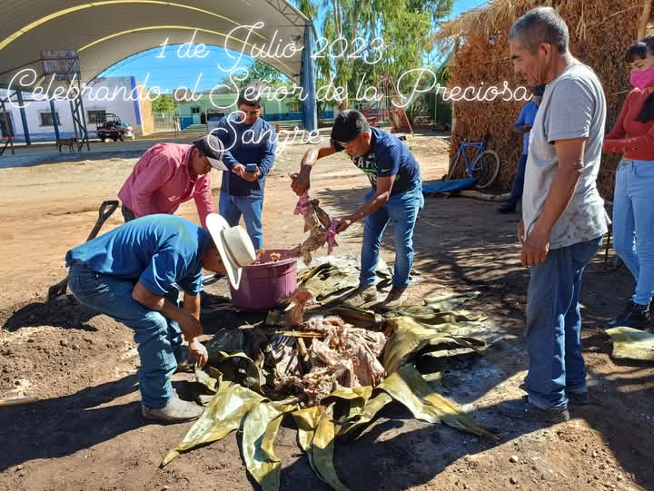
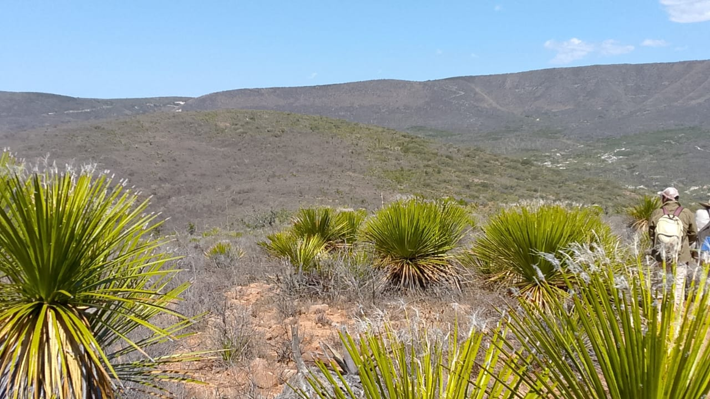
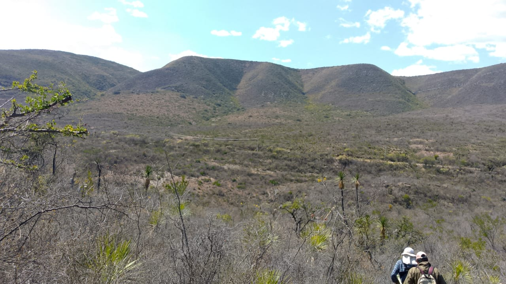

|
|
| principal |  |
Curiosidades de la comunidad de Santa Cruz Nuevo, Puebla La comunidad de Santa Cruz Pueblo Nuevo, Puebla, cuenta con una rica historia y tradiciones, así como con algunas curiosidades que la distinguen. Una de ellas es la festividad de la Santa Cruz, una celebración que se celebra el 3 de mayo y tiene un profundo significado religioso y cultural. Además, la arquitectura de las casas en la comunidad, con sus balcones enrejados y vanos enmarcados, también es notable. . |
|  |